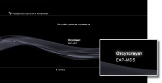
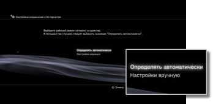
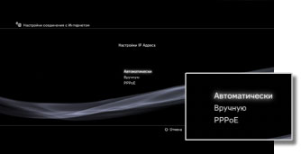
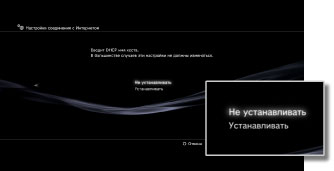
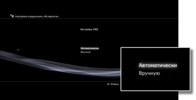
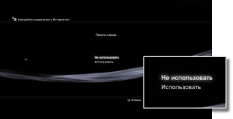
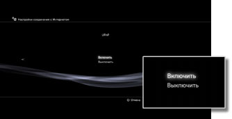

Настройки > Настройки сети > Настройки соединения с Интернетом (дополнительные настройки)
Настройки соединения с Интернетом (дополнительные настройки)
Если не удается подключиться к Интернету с помощью базовых настроек, можно изменить необходимые настройки. Настройте каждый элемент в соответствии с определенной сетевой средой.
1. |
Выберите |
|---|---|
2. |
Выберите [Настройки соединения с Интернетом]. |
3. |
Выберите [Специальные]. |
 (Настройки) >
(Настройки) >  (Настройки сети).
(Настройки сети).Метод соединения
Задайте метод соединения с сетью Интернет. Этот параметр доступен только в том случае, если в системе PS3™ поддерживается функция LAN.

| Проводное соединение | Служит для создания проводного соединения с использованием кабеля Ethernet |
|---|---|
| Беспроводное | Служит для создания соединения посредством LAN. |
Настройки WLAN
Задание SSID для точки доступа. Эта настройка доступна только в системах PS3™ с функцией беспроводной сети LAN.

| Сканировать | Поиск близлежащих точек доступа. Выберите этот параметр, если идентификатор SSID точки доступа неизвестен. Система определит точки доступа и отобразит информацию об идентификаторе SSID и настройках безопасности. |
|---|---|
| Ввести вручную | Указание точки доступа путем ввода ее идентификатора SSID вручную на клавиатуре. Выберите этот параметр, если идентификатор SSID известен. |
| Автоматически | Использование функции автоматической настройки точки доступа. Эти настройки доступны только в регионах, где продаются системы PS3™, поддерживающие данную функцию. Выберите эту настройку, если используется точка доступа, поддерживающая автоматическую установку. Следуйте инструкциям на экране. |
Настройки безопасности WLAN
Задание ключа шифрования для точки доступа. Эта настройка доступна только в системах PS3™ с функцией беспроводной сети LAN.

| Отсутствует | Запрет на задание ключа шифрования. |
|---|---|
| WEP | Задание ключа шифрования. Ключ шифрования можно ввести на следующем экране. Ключ шифрования отображается в виде нескольких звездочек. |
| WPA-PSK / WPA2-PSK |
Настройка проверки подлинности
Эти настройки доступны только в системах PS3™, распространяемых в Корее, и только в системах PS3™ с функцией беспроводной сети LAN.

| Отсутствует | Сведения о проверке подлинности не задаются. |
|---|---|
| EAP-MD5 | Задание сведений о проверке подлинности при использовании услуг WLAN. Введите ID пользователя и пароль на следующем экране. Для получения подробной информации обратитесь к поставщику службы общедоступной сети WLAN. |
Рабочий режим Ethernet
Установка скорости и метода передачи данных по сети Ethernet. Как правило, выбирается параметр [Определять автоматически].

| Определять автоматически | Автоматическая установка базовых настроек. |
|---|---|
| Настройки вручную | Ручная настройка скорости и метода передачи данных по сети Ethernet. |
Настройки IP Адреса
Задание способа получения IP-адреса при подключении к Интернету.

| Автоматически | Использование IP-адреса, выделенного сервером DHCP. Имя хоста сервера DHCP можно ввести на следующем экране. |
|---|---|
| Вручную | Задание IP-адрес вручную. Значения IP-адреса, маски подсети, роутера по умолчанию, а также основного и дополнительного DNS можно ввести на следующем экране. |
| PPPoE | Подключение к Интернету с помощью PPPoE. ID пользователя и пароль можно ввести на следующем экране. |
DHCP
Установка имени хоста DHCP. Обычно выбирается вариант [Не устанавливать].

| Не устанавливать | Имя хоста DHCP не устанавливается. |
|---|---|
| Устанавливать | Имя хоста DHCP устанавливается. |
Настройки DNS
Задание сервера DNS.

| Автоматически | Получение адреса сервера DNS автоматически. |
|---|---|
| Вручную | Ввод адреса сервера DNS вручную. |
MTU
Настройка значения MTU, используемого при передаче данных. Как правило, выбирается параметр [Автоматически].
| Автоматически | Задание значения MTU автоматически. |
|---|---|
| Вручную | Указание максимального размера пакетов данных (в байтах), которые можно передать за один раз. |
Прокси-сервер
Задание прокси-сервера, который будет использоваться.

| Не использовать | Не использовать прокси-сервер. |
|---|---|
| Использовать | Использовать прокси-сервер. Адрес прокси-сервера и номер порта можно ввести на следующем экране. |
UPnP
Задается для включения или отключения UPnP (Universal Plug and Play).

| Включить | Включение UPnP. |
|---|---|
| Выключить | Отключение UPnP. |
Подсказка
Если установить значение [Отключить], общение с другими пользователями может быть ограничено при использовании функции голосового/видео-чата или функций общения в играх.